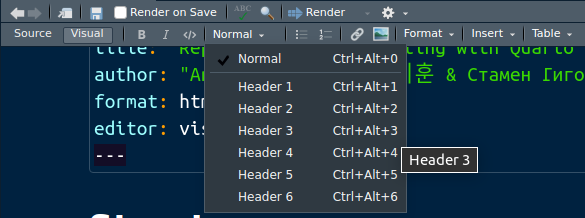
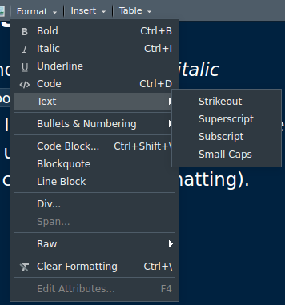
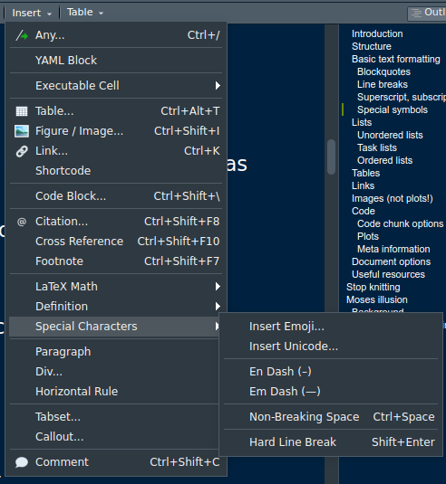
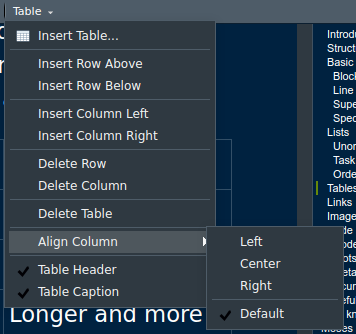

print("Fly you fools!")[1] "Fly you fools!"This a Quarto document. It shows a lot of features. You can use the source or visual editors to write your report and the render the file to the format of your choosing. Quarto primarily works with UTF-8 encoded text.
Give your file structure. Use sections to organize the content into logical bits:
# Header 1
## Header 2
### Header 3
#### You get the ideaIf you’re using the visual editor, simply click on the option you want from the drop down menu, as in Figure 1).

You can also include horizontal rules if you want to be fancy. Just use 3+ asterisks ****** or dashes ------
You can make your text stand out by making it italic *italic* _italic_ or bold **bold** __bold__. Spacing matters: * *this is broken**. In the visual editor, a lot of the options are available as the usual keyboard shortcuts, but you can also format text by clicking (Figure 2).

Are made by starting a new line with >. As per my last email:
Be kind. Rewind.
Manual line breaks are
made with two or more
spaces at the end of a line.
These aren’t used often but can be made by ^, ~index~, and ~~redacted~~ respectively: May 23rd 2022 by redacted. You can underline a text, but most people will interpret this as a link: [text goes here]{.underline}. Small caps are an option, too: [text goes here]{.smallcaps}.
Keep in mind that screen readers will not make a difference between these markings.
-- pages 1–22 🔁--- forget the ink, the milk, the blood—all was washed clean with the flood... Hello darkness my old friend…There are some special, reserved characters. Some of these you have already seen:
# marks headings,* and - make bullet points,* and _ render italic or bold text~ is used for strikethrough and subscript,^ is used for superscript` mark inline code,$ marks equations,! , [], (), and {} in certain constellations make links, underline text, insert images, make check boxes| helps build tables> make a block quote but <> makes emails or URLs clickable (like in the header.)Copy+paste 🙦🙧 dingbats 🙤🙥 or even insert emojis 🤓 into your text. You can also insert them by clicking in the visual editor (Figure 3)).

You can define terms that you are using for your report. For example, global means different things in theoretical linguistics, psycholinguistics, computer science, and political science.
term
: definition(psycholinguistics): pertaining to the overall interpretation of the whole sentence or text, as opposed to local, which relates to the individual words or at phrase-level
Are great for todos.
Every time the format of an ordered list changes, markdown will start a new list:
For data summaries you will just use code but e.g. if you want to show your experiment design or sentence segmentation, you might want to make a table. You can make a basic one Table 1 or a fancier one with subtables Table 2.
| Header A Pros | Header B Cons |
|---|---|
| You’re never alone | You’re never alone |
| Helps stress | Causes stress |
| You don’t have to cook every night | You need to decide what to cook every night |
Table 2: Main Caption
| Col1 | Col2 | Col3 |
|---|---|---|
| A | B | C |
| E | F | G |
| A | G | G |
| Col1 | Col2 | Col3 |
|---|---|---|
| A | B | C |
| E | F | G |
| A | G | G |
The second table consists of Table 2 (a) and Table 2 (b).
You can write them yourself (recommended), use the RStudio/Quarto generator (see Figure 3 and Figure 4 or an online one (see Section Useful resources).

Links and hyperlinks make finding relevant content much easier. Unlike Word, this works seamlessly in Quarto. To insert a link to a website or file, you use a combination of brackets. To link the website https://oer-vlc.de/ as The Virtual Linguistics Campus (OER) you type
[TEXT DISPLAYED](URL OR LOCATION). Showing the whole address is much simpler: https://oer-vlc.de/ is <https://oer-vlc.de/>.
Similarly, you can hyperlink important parts of your report, but you need to plan ahead and give them an ID. This is generally done by adding {#ID-TEXT-HERE}.
For example the Section Code or Figure 3 or Table 1. These references were made automatically: Section [Code] or @fig-insert or @tbl-marriage. You can hyperlink something manually, like you would a link, e.g. the Table with code options is [Table with code options](#tbl-options).
If you want to automatically cross-reference, you have to adhere to the naming convention (Table 3). Avoid using underscores ( _ ) in labels and IDs, because this causes issues with LaTeX.
| Prefix | Type | Description |
|---|---|---|
fig- |
Figure | Refers to figures, such as images, plots, or diagrams. |
sec- |
Section | Refers to sections within the document. |
tbl- |
Table | Refers to tables of data or information. |
cau- |
Caution | Refers to cautionary notes or alerts. |
cnj- |
Conjecture | Refers to mathematical conjectures or hypotheses. |
cor- |
Corollary | Refers to mathematical corollaries. |
def- |
Definition | Refers to definitions of terms or concepts. |
eq- |
Equation | Refers to mathematical equations. |
exm- |
Example | Refers to examples illustrating concepts or solutions. |
exr- |
Exercise | Refers to exercise questions or problems. |
imp- |
Important | Refers to important information. |
lem- |
Lemma | Refers to mathematical lemmas. |
lst- |
Listing | Refers to code listings or blocks of code. |
nte- |
Note | Refers to additional notes or remarks. |
prp- |
Proposition | Refers to mathematical propositions. |
rem- |
Remark | Refers to remarks or comments. |
sol- |
Solution | Refers to solutions to exercises or problems. |
thm- |
Theorem | Refers to mathematical theorems. |
tip- |
Tip | Refers to helpful tips or suggestions. |
wrn- |
Warning | Refers to warnings or cautionary messages. |
You list all the figures in this document, too, but only when making PDFs:
\listoffigures and \listoftables. I would like to reference Table 3.
Quarto accepts PNG, JPEG, and PDF images. Images can be linked/included by using special syntax (or clicking in the visual editor). The image description will appear under the picture as a caption and image location is the path to and the exact name of the file, e.g. “mycat.png” (in your local directory) or “Home/Pictures/mycat.png”:
{#ID}
The images will stay put in HTML but LaTeX will re-position them automagically. You can link an online image (Fig. 5 A Butterfly).

Or a local one somewhere on your computer (Fig. 6 Noah building the ark).
Now there are two.
I included the video on the exact instructions. The syntax for this is different, but also based on brackets.
{{< video VIDEO_URL_GOES_HERE >}\}
The beauty of Quarto is in creating (interactive) dynamic reports while you analyze data.
Why? You won’t forget (design choices etc.), documentation, saves work for future, everything in one place, better for sharing and reproducing research.
How? You can include code bits by using the apostrophe `inline code` inline code. You can insert chunks by typing:
```{}
Here is some undetermined code verbatim. It looks funny.
```…or by clicking on “insert chunk”.
Here is code that is explicitly in R and will be evaluated as such.
print("Fly you fools!")[1] "Fly you fools!"The first option in a chunk tells R what programming language to use: r, python, julia, SQL, Stan, etc.
You can name the code chunks (optional) to know where you are while knitting (especially valuable in long reports). Names must be unique, otherwise R will complain.
library(psych)
library(tidyverse)── Attaching core tidyverse packages ──────────────────────── tidyverse 2.0.0 ──
✔ dplyr 1.1.4 ✔ readr 2.1.5
✔ forcats 1.0.0 ✔ stringr 1.5.1
✔ ggplot2 3.5.1 ✔ tibble 3.2.1
✔ lubridate 1.9.3 ✔ tidyr 1.3.1
✔ purrr 1.0.2
── Conflicts ────────────────────────────────────────── tidyverse_conflicts() ──
✖ ggplot2::%+%() masks psych::%+%()
✖ ggplot2::alpha() masks psych::alpha()
✖ dplyr::filter() masks stats::filter()
✖ dplyr::lag() masks stats::lag()
ℹ Use the conflicted package (<http://conflicted.r-lib.org/>) to force all conflicts to become errorsMaybe you would like to never see the code that was just executed, because it doesn’t fit your report. But you do want to keep the result of the computation. In that case, you can set this globally at the top of your document.
execute:
echo: falseMaybe you have one code chunk where you do want to see this information. You can override the global settings in a particular code chunk by including in a special comment at the top of the block. This code is explicit:
print("The cake is a lie.")[1] "The cake is a lie."This code is quiet:
[1] "The cake is a lie."Some output may be irrelevant. You can tell R to omit it from the report by adding include: false in the chunk options. include: true will ensure that the output of the chunk is printed in the report. The chunk below is invisible in the output.
Perhaps you are experimenting with some code but would like to keep it out of both the report and the analysis. To do this, you can set the option eval to false.
# This code does not work but R will ignore it and not throw a fit
sum(1:5)-fooR might give you warnings that you may or may not want to see. You can show or hide them in the report with warning: false, respectively. Compare it with the first code chunk.
library(psych)
library(tidyverse)You may have a huge table you want print and it stretches your output too much (think: way over the margin of an A4 page). By default, Quarto makes it a scrollable element.
print("For anyone wondering about the advantages of a glass cork - there are MANY. They do not bring on a cork taint as natural corks might. The seal is perfectly tight, so they don’t oxidize the wine prematurely. Most people who try glass cork vs traditional corks will not notice the difference - but wine connoisseurs absolutely will. Finally, they preserve the taste of wine aged over time to a greater degree - when you lift a glass corked wine to your nose it's much easier to smell nineteen ninety eight when the undertaker threw mankind off hell in a cell and plummeted sixteen feet through an announcers table.")[1] "For anyone wondering about the advantages of a glass cork - there are MANY. They do not bring on a cork taint as natural corks might. The seal is perfectly tight, so they don’t oxidize the wine prematurely. Most people who try glass cork vs traditional corks will not notice the difference - but wine connoisseurs absolutely will. Finally, they preserve the taste of wine aged over time to a greater degree - when you lift a glass corked wine to your nose it's much easier to smell nineteen ninety eight when the undertaker threw mankind off hell in a cell and plummeted sixteen feet through an announcers table."Table 4 an overview of the available options. The values are always true or false. There are many more that you can explore in the documentation (see Section Useful resources).
| Option | Description |
|---|---|
eval |
Evaluate the code chunk (if false, just echos the code into the output). |
echo |
Include the source code in output |
output |
Include the results of executing the code in the output (true, false, or asis to indicate that the output is raw markdown and should not have any of Quarto’s standard enclosing markdown). |
warning |
Include warnings in the output. |
error |
Include errors in the output (note that this implies that errors executing code will not halt processing of the document). |
include |
Catch all for preventing any output (code or results) from being included (e.g. include: false suppresses all output from the code block). |
Plots can have the same options as code chunks, because… well, they are code chunks. This is true of Figure 5.
Quarto sets the plot size by default in the options, but for particularly big or small plots you can set the size manually. As with figures and tables, you can add labels/IDs (#| label:) and captions (#| fig-cap:), as long as you pay attention to the naming convention. Figure 5

By default, the resolution of the images is 72 DPI, but you can change this manually with dpi and numerical value. You can change the default figure alignment by specifying the option fig-align:.


Don’t forget to include the session information in your report!
sessionInfo()R version 4.2.0 (2022-04-22)
Platform: x86_64-pc-linux-gnu (64-bit)
Running under: Ubuntu 22.04.4 LTS
Matrix products: default
BLAS: /usr/lib/x86_64-linux-gnu/openblas-pthread/libblas.so.3
LAPACK: /usr/lib/x86_64-linux-gnu/openblas-pthread/libopenblasp-r0.3.20.so
locale:
[1] LC_CTYPE=en_US.UTF-8 LC_NUMERIC=C
[3] LC_TIME=de_DE.UTF-8 LC_COLLATE=en_US.UTF-8
[5] LC_MONETARY=de_DE.UTF-8 LC_MESSAGES=en_US.UTF-8
[7] LC_PAPER=de_DE.UTF-8 LC_NAME=C
[9] LC_ADDRESS=C LC_TELEPHONE=C
[11] LC_MEASUREMENT=de_DE.UTF-8 LC_IDENTIFICATION=C
attached base packages:
[1] stats graphics grDevices utils datasets methods base
other attached packages:
[1] lubridate_1.9.3 forcats_1.0.0 stringr_1.5.1 dplyr_1.1.4
[5] purrr_1.0.2 readr_2.1.5 tidyr_1.3.1 tibble_3.2.1
[9] ggplot2_3.5.1 tidyverse_2.0.0 psych_2.4.3
loaded via a namespace (and not attached):
[1] compiler_4.2.0 pillar_1.9.0 tools_4.2.0 digest_0.6.35
[5] viridisLite_0.4.2 timechange_0.3.0 jsonlite_1.8.8 evaluate_0.23
[9] lifecycle_1.0.4 gtable_0.3.4 nlme_3.1-155 lattice_0.20-45
[13] pkgconfig_2.0.3 rlang_1.1.3 cli_3.6.2 rstudioapi_0.16.0
[17] yaml_2.3.8 parallel_4.2.0 xfun_0.43 fastmap_1.1.1
[21] withr_3.0.0 knitr_1.46 hms_1.1.3 generics_0.1.3
[25] htmlwidgets_1.6.4 vctrs_0.6.5 grid_4.2.0 tidyselect_1.2.1
[29] glue_1.7.0 R6_2.5.1 fansi_1.0.6 rmarkdown_2.26
[33] farver_2.1.1 tzdb_0.4.0 magrittr_2.0.3 scales_1.3.0
[37] htmltools_0.5.8.1 mnormt_2.1.1 colorspace_2.1-0 labeling_0.4.3
[41] utf8_1.2.4 stringi_1.8.3 munsell_0.5.1 Quarto has native support for embedding Mermaid and Graphviz diagrams. This is beyond the scope of this course, but I encourage you to check it out: Mermaid Live Editor and GraphvizOnline.
flowchart LR
A[How to tell if a toy\n is for BOYS or GIRLS] --> C{Do you operate the toy\n with your genitalia?}
C -->|Yes| D(It is NOT a toy for children)
C -->|No| E(It is for either BOYS or GIRLS)
Quarto includes 25 themes from the Bootswatch project (see also Section Useful resources). Those you can set globally:
format:
html:
theme: unitedIf you have your own theme or find a better one online, you can reference it as well:
format:
html:
theme: my.scssOnce you have written and saved your document, you can create your document by clicking on Render or pressing CTRL+SHIFT+K/CMD+SHIFT+K.
Some parts of the report you may still be working on. You want to keep them in the file but you don’t want them to be included. You can tell R to stop generating the report after a certain point by using knitr::knit_exit(). Everything that comes after this command will not be evaluated.
knitr::knit_exit()